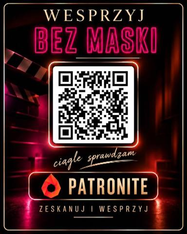

Śledztwa, dokumenty i ludzie z wnętrza afer. Książki reportażowe i program „Bez maski” — pokazuję to, czego inni nie chcą pokazywać.
Piotr Krysiak to polski dziennikarz śledczy i autor książek reportażowych. Wcześniej pracował m.in. w tygodniku „Wprost” i w TVP, a potem skupił się na pisaniu książek. Od kilku lat prowadzi program Bez maski — pokazuje dokumenty, relacje i powiązania oraz zaznacza, czego jeszcze nie wiemy.
Początek pracy dziennikarskiej w dziale stołecznym „Trybuny”.
Przejście do powstającego „Faktu”, a następnie praca w „Życiu Warszawy”.
Organizuje koncert polskich artystów na Majdanie w Kijowie podczas Pomarańczowej Rewolucji.
Praca w „Super Expressie”, potem w tygodniku „Wprost”. Pierwsza książka: „Edyta Górniak. Bez cenzury”. W 2009 r. sąd nakazał m.in. przeprosiny i zakazał rozpowszechniania części książki.
Przejście z „Wprost” do TVP Info — współtworzenie portalu stacji, potem praca w serwisie informacyjnym.
„Agent Tomek: Spowiedź”. Producent TVP Info, a później szef serwisów informacyjnych.
Szef publicystyki TVP Info. Współtworzy program „Kuchnia z Wiejskiej”, związany z „Woronicza 17” i wydawca „Minęła 20”.
Odejście z TVP. Według relacji Krysiaka stracił pracę po zmianach w telewizji publicznej.
„Wyspa ślepców”.
„Dziewczyny z Dubaju” i „Diler gwiazd”.
Premiera filmu „Dziewczyny z Dubaju” w kinach. Książka „Chłopaki z Dubaju”.
„Dziewczyny z Dubaju 2”. Sprawy sądowe związane z publikacjami — m.in. pozew Omenaa Mensah i prywatny akt oskarżenia Jarosława Jakimowicza, który sąd drugiej instancji oddalił.
Dziennikarz śledczy tygodnika „Newsweek”.
Dołącza do redakcji Gońca. Prowadzi stały format na kanale Gońca na YouTube.
Rozwija kanał „Bez maski”. Publikuje także w Pressmanii.
Reportaże, wywiady-rzeki i śledztwa — od kariery gwiazd po kulisy afer.
Książka o karierze i życiu wokalistki. Po pozwie część nakładu została wycofana z półek.
Wywiad-rzeka z „polskim Jamesem Bondem” — kulisy pracy wywiadu.
Śledztwo o Polkach pracujących w Dubaju. Bestseller i głośny film kinowy.
Druga strona medalu — historia mężczyzn uwikłanych w dubajskie afery.
Kontynuacja bestsellera — kolejne rozdziały śledztwa, które wstrząsnęło Polską.
Sprawy, którymi żyje Polska — od uczelni po międzynarodowe afery.
#bezmaski #podcast #dcplus · Oglądaj na YouTube
Wspieraj niezależne dziennikarstwo i pomóż kontynuować śledztwa.
Subskrybuj kanał i włącz dzwoneczki, żadziane nigdy nie ominą najważniejszych raportów.
Wsparcie finansowe pozwala na niezależne badania i publikacje. Każda kwota ma znaczenie.

Jeśli masz informację do przekazania, skontaktuj się przez poniższy formularz.
Rozumiem, że wiadomość zostanie wysłana z mojej poczty, a nie przez stronę internetową.
Social media
Śledź na żywo i bierz udział w na żywo.
© 2026 Piotr Krysiak. Wszelkie prawa zastrzeżone.